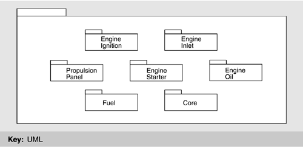

| [ Team LiB ] |
|
8.3 Architectural SolutionFigure 8.3 shows a reference model for a flight simulator. The three roles we identified earlier (air vehicle, environment, and instructor) are shown interacting with the crew and the various cueing systems. Typically, the instructor is hosted on a different hardware platform from the air vehicle model. The environment model may be hosted either on a separate hardware platform or with the instructor station. Figure 8.3. Reference model for flight simulatorThe logical division between the instructor station and the other two portions is clear. The instructor station supports the instructor's control and monitoring of the actions of the crew. The other two portions perform the simulation. The division between the air vehicle and the environment is not as clear. For example, if an aircraft launches a weapon, it is logically a portion of the air vehicle until it leaves the vehicle, at which point it becomes a portion of the environment. Upon firing, the aerodynamics of the weapon are influenced initially by the proximity of the aircraft. Thus, any modeling of the aerodynamics must remain, at least initially, tightly coupled to the air vehicle. If the weapon is always considered a portion of the environment, its modeling involves tight coordination between the air vehicle and the environment. If it is modeled as a portion of the air vehicle and then handed off to the environment when fired, control of the weapon needs to be handed from one to the other. TREATMENT OF TIME IN A FLIGHT SIMULATORRecall from Chapter 5 that resource management is a category of tactics to achieve performance goals. In a real-time simulator, the most important resource to manage is time itself. A flight simulator is supposed to reflect the real world, which it does by creating time-based real-world behaviors. Thus, when the pilot in a simulator activates a particular control, the simulator must provide the same response in the same time as the actual aircraft would. "In the same time" means both within an upper bound of duration after the event and within a lower bound of duration. Reacting too quickly is as bad for the quality of the simulation as reacting too slowly. There are two fundamentally different ways of managing time in a flight simulator—periodic and event-based—and both of these are used. Periodic time management is used in portions that must maintain real-time performance (such as the air vehicle), and event-based time management is used in portions where real-time performance is not critical (such as the instructor station). Periodic Time ManagementA periodic time-management scheme has a fixed (simulated) time quantum based on the frame rate. That is the basis of scheduling the system processes. This scheme typically uses a non-pre-emptive cyclic scheduling discipline, which proceeds by iterating through the following loop:
A simulation based on the periodic management of time will be able to keep simulated time and real time in synchronization as long as each process is able to advance its state to the next period within the time quantum allocated to it. Typically, this is managed by adjusting the responsibilities of the individual processes so that they are small enough to be computed in the allocated quantum. It is the designer's responsibility to provide the number of processors needed to ensure sufficient computational power to enable all processes to receive their quantum of computation. Event-Based Time ManagementAn event-based time-management scheme is similar to the interrupt-based scheduling used in many operating systems. The schedule proceeds by iterating through the following loop:
In this case, simulated time advances by the invoked processes placing events on the event queue and the scheduler choosing the next event to process. In pure event-based simulations, simulated time may progress much faster (as in a war game simulation) or much slower (as in an engineering simulation) than real time. Mixed-Time SystemsReturning now to the scheduling of the three portions of the flight simulator, the instructor station is typically scheduled on an event basis—those events that emanate from the instructor's interactions—and the air vehicle model is scheduled on a periodic basis. The environment model can be scheduled using either regime. Thus, the coupling between the air vehicle and the environment may involve matching different time regimes. Flight simulators must marry periodic time simulation (such as in the air vehicle model) with event-based simulation (such as in the environment model, in some cases) and with other event-based activities that are not predictable (such as an interaction with the instructor station or the pilot setting a switch). Many scheduling policies are possible from the perspective of each process involved in this marriage. A simple policy for managing events within a periodically scheduled processor is that periodic processing must occur immediately after a synchronization step and complete before any aperiodic processing. Aperiodic processing proceeds within a bounded interval, during which as many messages as possible will be retrieved and processed. Those not processed during a given interval must be deferred to subsequent intervals, with the requirement that all messages be processed in the order received from a single source. Communication from the portions of the system managed on an event basis to the portions managed using periodic scheduling appears as aperiodic and is scheduled as just discussed. Communication from the portions of the system managed using periodic schedule appears as events to the portions managed on an event basis. Given this understanding of managing time in a flight simulator, we can now present the architectural pattern that handles this complexity. This pattern is for the air vehicle, and so the time management discussion is from the air vehicle's perspective. THE STRUCTURAL MODEL ARCHITECTURAL PATTERNStructural Model is an architectural pattern, as we defined it in Section 2.3. That is, it consists of a collection of element types and a configuration of their coordination at runtime. In this section, we present the Structural Model pattern and discuss the considerations that led to its design. Recall that the air vehicle model itself may be spread over several processors. Thus, the elements of the air vehicle structural model must coordinate internally across processors as well as with the environment model and the instructor portions of the simulation running on (potentially) different processors. The constituents of the Structural Model architectural pattern are, at the coarsest level, the executive and the application.
First we will discuss the air vehicle's executive modules in detail and then return to a discussion of its application modules. MODULES OF THE AIR VEHICLE MODEL EXECUTIVEFigure 8.4 shows the air vehicle structural model with the executive pattern given in detail. The modules in the executive are the Timeline Synchronizer, the Periodic Sequencer, the Event Handler, and the Surrogates for other portions of the simulator. Figure 8.4. The Structural Modeling pattern of an air vehicle system processor with focus on the executiveTimeline SynchronizerThe timeline synchronizer is the base scheduling mechanism for the air vehicle model. It also maintains the simulation's internal notion of time. The other three elements of the executive—the periodic sequencer, the event handler, and the surrogates—all must be allocated processor resources. The timeline synchronizer also maintains the current state of the simulation. The timeline synchronizer passes both data and control to the other three elements and receives data and control from them. It also coordinates time with other portions of the simulator. This can include other processors responsible for a portion of the air vehicle model which have their own timeline synchronizers. Finally, the timeline synchronizer implements a scheduling policy for coordinating both periodic and aperiodic processing. For the sake of continuity, precedence is given to the periodic processing. Periodic SequencerThe periodic sequencer is used to conduct all periodic processing performed by the simulation's subsystems. This involves invoking the subsystems to perform periodic operations according to fixed schedules. The periodic sequencer provides two operations to the timeline synchronizer. The import operation requests that the periodic sequencer invoke subsystems to perform their import operation. The update operation requests that the periodic sequencer invoke subsystems' update operations. To conduct its processing, the periodic sequencer requires two capabilities. The first is to organize knowledge of a schedule. By schedule we mean the patterns of constituent invocations that represent the orders and rates of change propagation through the simulation algorithms realized by the constituents. The enactment of these patterns essentially represents the passage of time within the air vehicle simulation in its various operating states. The second capability is to actually invoke the subsystems through their periodic operations by means of some dispatching mechanism. Event HandlerThe event handler module is used to orchestrate all aperiodic processing performed by subsystems. This involves invoking their aperiodic operations. The event handler provides four operations to the timeline synchronizer: configure (used to start a new training mission, for example), constituent_ event (used when an event is targeted for a particular instance of a module), get_outbound_msg (used by the timeline synchronizer to conduct aperiodic processing while in system operating states, such as operate, that are predominantly periodic), and send (used by subsystem controllers to send events to other subsystem controllers and messages to other systems). To perform its processing, the event handler requires two capabilities. The first capability is to determine which subsystem controller receives an event, using knowledge of a mapping between event identifiers and subsystem instances. The second capability is to invoke the subsystems and to extract required parameters from events before invocation. SurrogateSurrogates are an application of the "use an intermediary" tactic and are responsible for system-to-system communication between the air vehicle model and the environment model or the instructor station. Surrogates are aware of the physical details of the system with which they communicate and are responsible for representation, communication protocol, and so forth. For example, the instructor station monitors state data from the air vehicle model and displays it to the instructor. The surrogate gathers the correct data when it gets control of the processor and sends it to the instructor station. In the other direction, the instructor may wish to set a particular state for the crew. This is an event received by the surrogate and passed to the event processor for dispatching to the appropriate subsystems. This use of surrogates means that both the periodic scheduler and the event handler can be kept ignorant of the details of the instructor station or the platform on which the environment model is operating. All of the system-specific knowledge is embedded in the surrogate. Any change to these platforms will not propagate further than the surrogate in the air vehicle model system. MODULES OF THE AIR VEHICLE MODEL APPLICATIONFigure 8.5 shows the module types that exist in the application subpart of the air vehicle structural model. There are only two: the Subsystem Controller and the Controller Child. Subsystem controllers pass data to and from other subsystem controller instances and to their children. Controller children pass data only to and from their parents, not to any other controller children. They also receive control only from their parents and return it only to their parents. These restrictions on data and control passing preclude a controller child from passing data or control even to a sibling. The rationale for this is to assist integration and modifiability by eliminating coupling of a child instance with anything other than its parent. Any effect of modification or integration is mediated by the parent subsystem controller. This is an example of the use of the "restrict communication" tactic. Figure 8.5. The application module typesSubsystem ControllerSubsystem controllers are used to interconnect a set of functionally related children to do the following:
They are also responsible for determining how to use the capabilities of their children to satisfy trainer-specific functionality such as malfunctions and the setting of parameters. Because the Structural Model pattern restricts communication among controller children, a subsystem controller must provide the capability to make logical connections between its children and those of other subsystems. Inbound connections supply inputs produced outside of the subsystem that the subsystem's children need for their simulation algorithms. Outbound connections satisfy similar needs of other subsystems and of surrogates. These connections appear as sets of names by which a subsystem controller internally refers to data considered to be outside of itself. When such a name is read or written, the appropriate connections are assumed to be made. How the connections are actually made is determined later in the detailed design and is a variation point of the pattern (see Chapter 14, Product Lines, for a discussion of variation points). In addition to making connections between its children and those of other subsystems, the subsystem controller also acts as an intermediary among its own children since restricting communication means that they are not allowed to directly communicate among themselves. As we mentioned, a flight simulator can be in one of several states. This is translated through the executive to a particular executive state. The executive then reports its current state to the subsystem controller. The two states that are relevant here are operate and stabilize. The operate state instructs the subsystem controller to perform its normal computations relevant to advancing the state of the simulation. The stabilize state tells the subsystem controller to terminate its current computation in a controlled fashion (to prevent the motion platform from harming the crew through uncontrolled motion) as follows:
Subsystem controllers must be able to do the following:
Finally, subsystem controllers may support the reconfiguration of mission parameters such as armaments, cargo loads, and the starting location of a training mission. Subsystem controllers realize these capabilities through periodic and aperiodic operations made available to the periodic sequencer and event handler, respectively. Subsystem controllers must support the two periodic operations—update and import—and may support two others (which are aperiodic)—process_event and configure. UpdateThe update operation causes the subsystem controller to perform periodic processing appropriate to the current system operating state, which is provided as an input parameter. In the operate state, the update operation causes the subsystem controller to retrieve inputs needed by its children by means of inbound connections, to execute operations of its children in some logical order so that changes can be propagated through them, and to retrieve their outputs for use in satisfying another's inputs or the subsystem's outbound connections. More than just a sequencer, this algorithm provides a logical "glue" that cements the children into some coherent, aggregate simulation. This glue may include computations as well as data transformations and conversions. In the stabilize state, the update operation is used to request that the subsystem controller perform one iteration of its stabilization algorithm, and to determine whether locally defined stability criteria are satisfied. The update operation provides one output parameter, indicating whether the subsystem controller considers the subsystem to be currently stable. This assumes that such a determination can be made locally, which may not be valid in all circumstances. Subsystem controllers may provide the capability to do the following tasks. ImportThe import operation is used to request that the subsystem controller complete certain of its inbound connections by reading their values and to locally store their values for use in a subsequent update operation. There are two aperiodic operations provided by subsystem controllers: process_event and configure. Process_eventThe process_event operation is used in operating states that are predominantly periodic, such as operate, to ask the subsystem controller to respond to an event. The event is provided by an input parameter to the operation. Several events from the instructor–operator station fall into this category, such as process_malfunction, set_parameter, and hold_parameter. ConfigureThe configure operation is used in system operating states, like initialize, in which the processing is predominantly aperiodic. This operation is used to establish a named set of conditions such as some training device configuration or training mission. The information the subsystem controller needs to establish the condition may be provided as an input parameter on the operation, as a location in a memory on secondary storage, or in a database where the information has been stored for retrieval. To complete the operation, the subsystem controller invokes operations of its children that cause the children to establish the conditions. Controller ChildrenAir vehicle model controller children may be simulations of real aircraft components, such as a hydraulic pump, an electrical relay, or a fuel tank. They can support simulator-specific models such as forces and moments, weights and balances, and the equations of motion. They can localize the details of cockpit equipment, such as gauges, switches, and displays. No matter what specific functionality they simulate, controller children are all considered to be of the same module type. In general, controller children support the simulation of an individual part, or object, within some functional assembly. Each child provides a simulation algorithm that determines its own state based on the following:
A child makes this determination as often as it is requested to do so by its subsystem controller, which provides the required inputs and receives the child's outputs. This capability is called updating. A child can support the capability of producing abnormal outputs, reflecting a malfunction condition. In addition to potentially modeling changes in normal operating conditions, such as wear and tear, which can result in malfunctions over time, children can be told to start and stop malfunctioning by their subsystem controller. A controller child can also support the setting of a simulation parameter to a particular value. Simulation parameters are external names for performance parameters and decision criteria used in the controller child's simulation algorithm. Each child can initialize itself to some known condition. Like other child capabilities, parameter setting and initialization must be requested by the subsystem controller. The updating, malfunctioning, parameter setting, and initializing capabilities differ in the incidence of their use by the subsystem controller. The child is requested to update on a periodic basis, effecting the passage of time within the simulation. Requests for the other capabilities are made only sporadically. Controller children support these capabilities through a set of periodic and aperiodic operations made available to the subsystem controller. update is the single periodic operation and is used to control the periodic execution of the simulation algorithm. The child receives external inputs and returns its outputs through parameters on the operation. Two aperiodic operations are provided by the children: process_event and configure. All logical interactions among children are mediated by the subsystem controller, which is encoded with knowledge of how to use the child operations to achieve the simulation requirements allocated to the subsystem as a whole. This includes the following:
Controller child malfunctions are assumed to be associated with abnormal operating conditions of the real-world components being modeled. Therefore, the presence and identities of these malfunctions are decided by the child's designer and made known to the subsystem controller's designer for use in realizing subsystem malfunction requests. Subsystem malfunctions need not correspond directly to those supported by the children, and certain of them can be realized as some aggregation of more primitive failures supported by children. It is the subsystem controller's responsibility to map between low-level failures and subsystem-level malfunctions. Likewise, the presence and identities of simulation parameters are decided by the controller child's designer based on the characteristics of the child's simulation algorithm. They are made known to the subsystem controller's designer for use in realizing subsystem requests or for other purposes for which they are intended or are suitable to support. SKELETAL SYSTEMWhat we have thus far described is the basis for a skeletal system, as defined in Chapter 7. We have a structural framework for a flight simulator, but none of the details—the actual simulator functionality—have been filled in. This is a general simulation framework that can be used for helicopter and even nuclear reactor simulation. The process of making a working simulation consists of fleshing out this skeleton with subsystems and controller children appropriate to the task at hand. This fleshing out is dictated by the functional partitioning process, which we will discuss next. It is rather striking that an entire flight simulator, which can easily comprise millions of lines of code, can be completely described by only six module types: controller children, subsystem controllers, timeline synchronizer, periodic sequencer, event handler, and surrogate. This makes the architecture (comparatively) simple to build, understand, integrate, grow, and otherwise modify. Equally important, with a standard set of fundamental patterns one can create specification forms, code templates, and exemplars that describe those patterns. This allows for consistent analysis. When the patterns are mandated, an architect can insist that a designer use only the provided building blocks. While this may sound draconian, a small number of fundamental building blocks can, in fact, free a designer to concentrate on the functionality—the reason that the system is being built in the first place. ALLOCATING FUNCTIONALITY TO CONTROLLER CHILDRENNow that we have described the architectural pattern with which the air vehicle model is built, we still need to discuss how operational functionality is allocated to instances of the modules in that pattern. We do this by defining instances of the subsystem controllers, to detail the specifics of the aircraft to be simulated. The actual partitioning depends on the systems on the aircraft, the complexity of the aircraft, and the types of training for which the simulator is designed. In this section, we sketch a sample partitioning. We begin with a desire to partition the functionality to controller children based on the underlying physical aircraft. To accomplish this we use an object-oriented decomposition approach, which has a number of virtues, as follows:
In breaking down the air vehicle modeling problem into more manageable units, the airframe becomes the focus of attention. Groups exist for the airframe, the forces on it, the things outside it, and the things inside it but ancillary to its operation. This typically results in the following specific groups:
GROUP DECOMPOSITIONThe coarsest decomposition of the air vehicle model is the group. Groups decompose into systems, which in turn decompose into subsystems. Subsystems provide the instances of the subsystem controllers. Groups and systems are not directly reflected in the architecture— there is no group controller—and exist to organize the functionality assigned to the various instances of subsystem controllers. This decomposition is managed via a process using n-square charts. n-Square ChartsOne method of presenting information about the interfaces in a system is n-square charts. We will make use of this presentation method to illustrate how the partitions we selected relate to each other. Because some of the factors we consider in making partitioning decisions are based on the partition interfaces, n-square charts are useful in evaluating those decisions. They are a good method for capturing the input and output of a module and can illustrate the abstractions used in various parts of the design. An example of an n-square chart is shown in Figure 8.6. The boxes on the main diagonal represent the system partitions. Their inputs are found in the column in which the partition lies; their outputs are shown in the corresponding row. The full set of inputs to a partition is thus the union of all the cell contents of the partition's column. Conversely, the full set of outputs is the union of all the cell contents in the row in which the partition resides. The flow of data from one partition to another is to the right, then down, to the left, and then up. Figure 8.6. The n-square chartFigure 8.7 shows an n-square chart depicting the interfaces between the groups identified above. Interfaces external to the air vehicle model have been omitted for simplicity. These interfaces terminate in interface subsystems. The data elements shown on this chart are aggregate collections of data to simplify the presentation. The interfaces are not named here; nor are they typed. As we investigate partitions, looking at more limited sets of elements, the information presented becomes more detailed. Systems engineers can use this approach to the point where all of the primitive data objects in the interfaces are shown. During detailed design, the interface types and names will be determined. Figure 8.7. Air vehicle model domain n-square for groupsNot all of the air vehicle models will correspond to aircraft structure. The aerodynamics models are expressions of the underlying physics of the vehicle's interaction with the environment. There are few direct analogs to aircraft parts. Partitioning this area means relying on the mathematical models and physical entities that describe the vehicle's dynamics. Partitioning correctly based on mathematical models that affect the total aircraft is more difficult than partitioning based on the aircraft's physical structure. DECOMPOSING GROUPS INTO SYSTEMSThe next step is to refine groups into systems. A system and a group can be units of integration: The functionality of a system is a relatively self-contained solution to a set of simulation problems. These units are a convenient focus for testing and validation. Group partitions exist as collections of code modules implemented by one engineer or a small group of engineers. We can identify systems within the groups we have defined. We will look briefly at the kinetics group systems as an example. Systems in the Kinetics GroupThese systems consist of elements concerned with the kinetics of the vehicle. Included in this group are elements directly involved in controlling the vehicle's motion and modeling the interaction of the vehicle and its control surfaces with the environment. The systems identified in this group are:
All of the subsystems in the propulsion system shown in Figure 8.8 deal with the model of the aircraft's engines. Multiple engines are handled by creating multiple sets of state variables and duplicate instances of objects, where appropriate. This system's principal purpose is to calculate engine thrust, moments caused by rotation of engine parts, and the forces and moments caused by mass distribution of fuel. Figure 8.8. A propulsion subsystem The aircraft's fuel system is grouped here because its primary interface is to the engines. It calculates the forces acting on the airframe from the movement of the fuel within the tanks as well as the gravitational effect of the fuel mass. At this point we have identified the division of functionality, its allocation to subsystems and subsystem controllers, and the connections among subsystems. To complete the architecture, we need to do the following:
To summarize, we decomposed the air vehicle into four groups: kinetics, aircraft systems, avionics, and environment. We then decomposed the kinetics group into four systems: airframe, propulsion, landing gear, and flight controls. Finally, we presented a decomposition of the propulsion system into a collection of subsystems. |
| [ Team LiB ] |
|